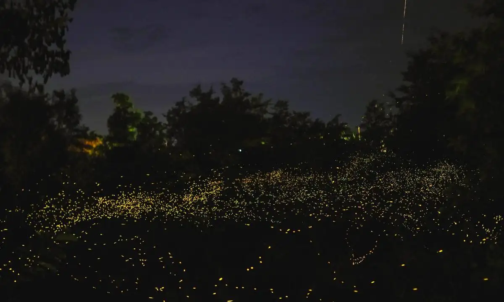
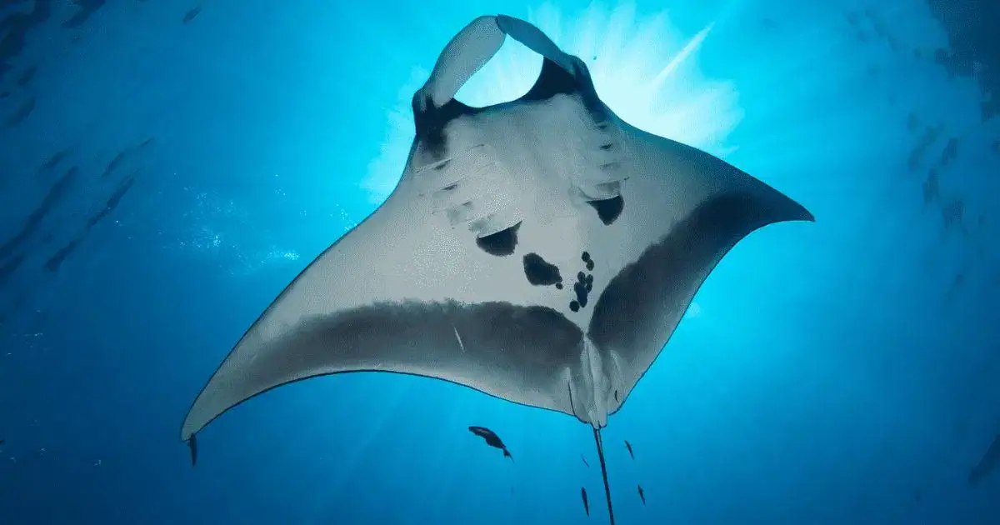
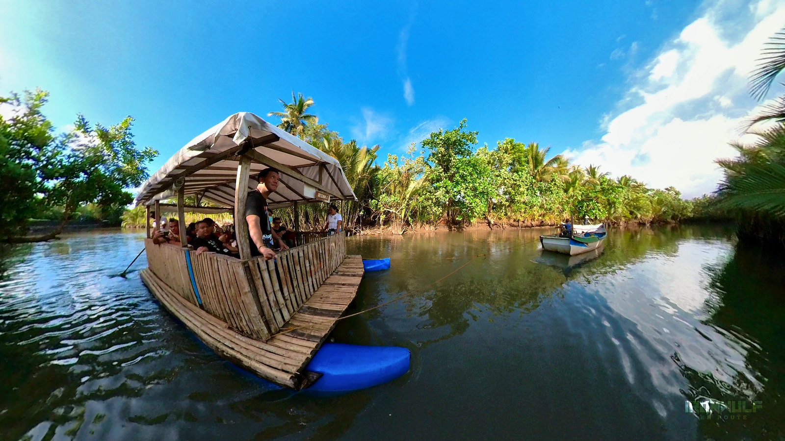

Evening
Firefly Watching
Cruise the Ogod River after dark and witness thousands of synchronously blinking fireflies illuminating the mangroves.
Donsol is recognized globally as the whale shark capital of the world. From November to June, hundreds of whale sharks — called butanding locally — converge in the nutrient-rich waters of Donsol Bay to feed on plankton.
The whale shark (Rhincodon typus) grows up to 12 metres and weighs up to 20 metric tons. Despite their size, they are gentle filter feeders and completely harmless to swimmers. The Donsol program, launched with WWF-Philippines in 1998, is an internationally acclaimed model of responsible wildlife tourism.

Peak season: November – June · Best months: February – May · Average sightings per trip: 3–5 sharks
All visitors register at the Donsol Visitors Center and attend a mandatory briefing on responsible interaction rules.
A trained BIO on each boat spots sharks from the bow, signals swimmers, and enforces guidelines throughout the trip.
Interaction is limited to snorkeling — no SCUBA. Swimmers must maintain a 4-metre minimum distance from the whale shark's body.
Photo-ID from spot patterns behind the gills identifies individual sharks, contributing to global population research.
Touching, riding, or feeding whale sharks is strictly prohibited. Flash photography is banned. Boat engines must cut when within 30 metres of a shark. These rules protect the animals and preserve Donsol's reputation as an ethical destination.

Cruise the Ogod River after dark and witness thousands of synchronously blinking fireflies illuminating the mangroves.

Resident reef manta rays frequently feed alongside whale sharks in Donsol Bay — a thrilling bonus encounter.

Daytime river cruises through bird-rich mangroves offer sightings of kingfishers, herons, and monitor lizards.